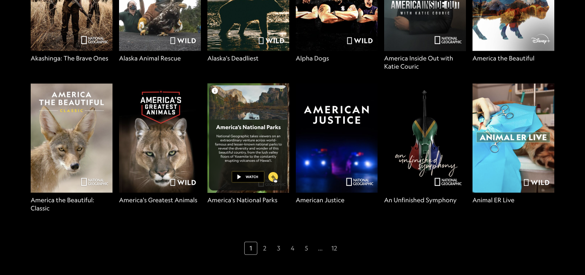
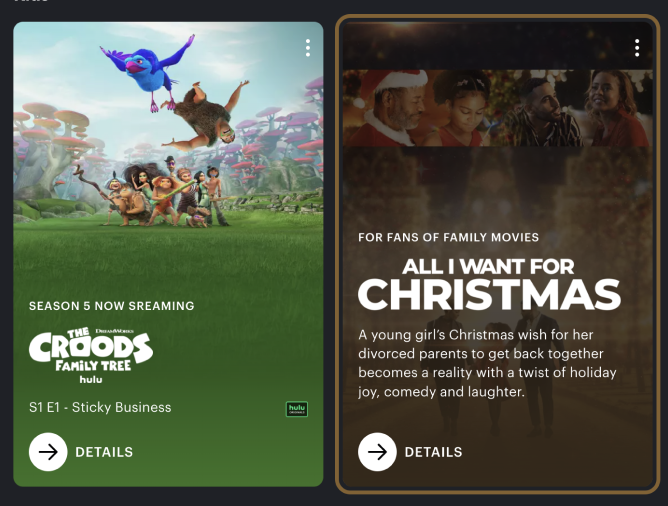
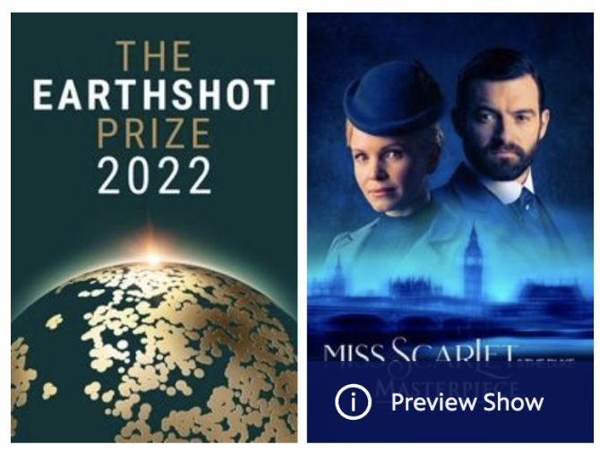

OVERVIEW
Using HTML, CSS, and Javascript to create a micointeraction on the
National Geographic Browsing page that gives users quick access to
quick information about a TV show.
PROBLEM
Currently, the only microinteraction on the National Geographic
Browsing page is when you hover, the cursor changes to a pointer.
When browsing shows, it is almost completely unnoticeable that these
cards are clickable. There is nothing exciting about interacting with
this page, and I wanted to change that.
GOAL
Enhance the National Geographic browsing experience by adding
microinteractions that bring joy and provide useful information to users.
PROCESS
1 - COMPETITOR RESEARCH
I started by looking at what else is out there. How do other websites
solve this issue?

Hulu

PBS
When you hover on a hulu tv show, a border appears to emphasize
which you are hovering on, the image darkens, and a quick summary
of the show rises up beneath the title.
When you hover on a pbs tv show, an information button appears as
well as the words “preview show”.
I was inspired by the solutions these websites implemented to give
feedback to the users when browsing tv shows, and I wanted to bring
some of these elements into my own design.
2 - ALPHA
The first step was to figure out what I want to happen when the users
hover on a card. I ended up designing this first step to be when a user
hovers on the tv show, the image zooms in and a white glow appears around
the outside.
This helped make it more engaging and apparent that the user is hover
over a specific show
This was built using only HTML & CSS and you can interact with the alpha build here: https://christinaleisen.com/idm241/alpha/build/
©Image is curtesy of National Geographic, https://www.nationalgeographic.com/tv/